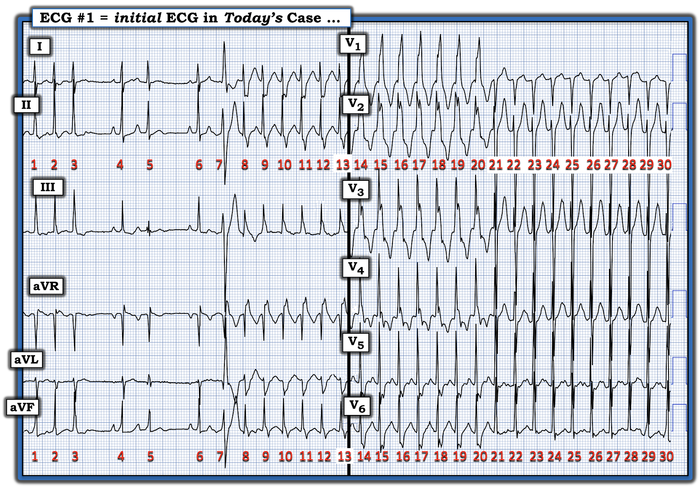
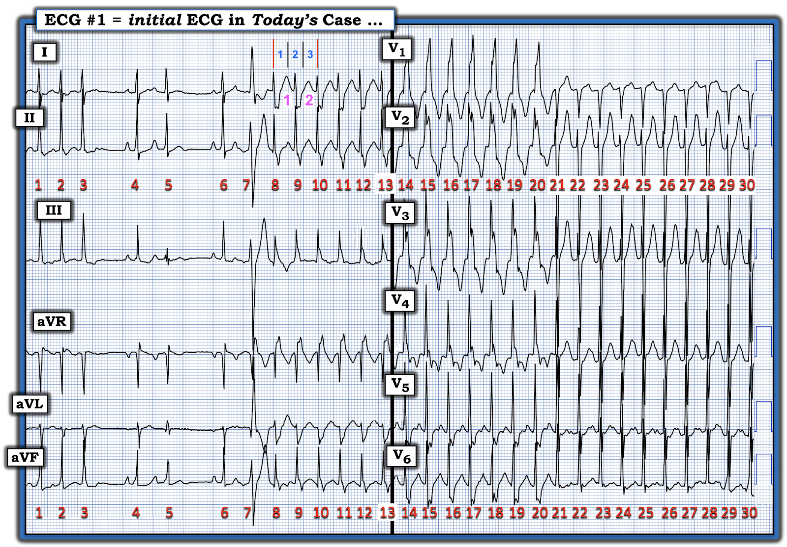
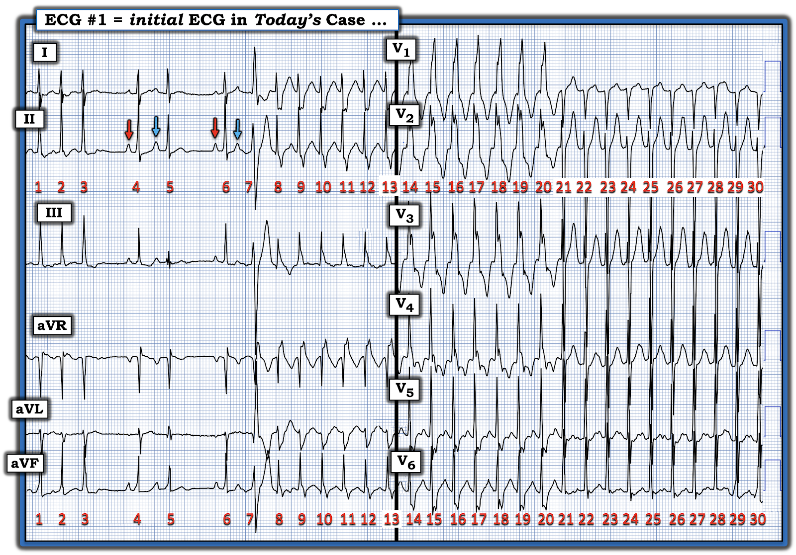
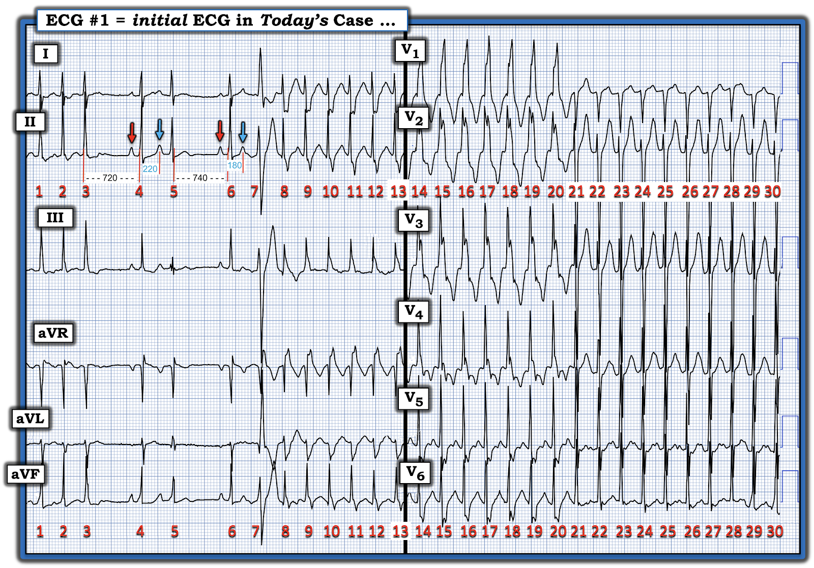
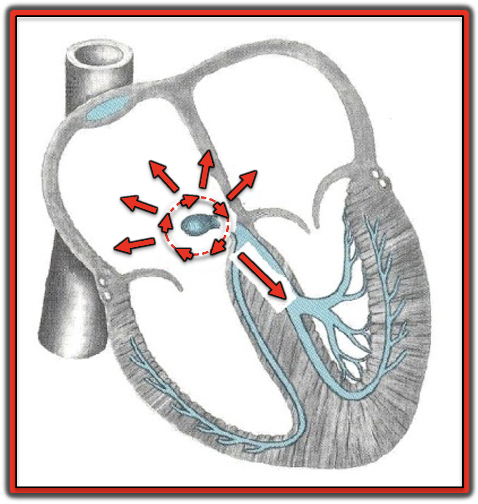
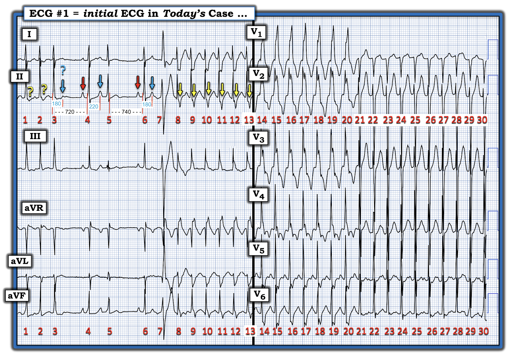

ECG Blog #507 — Một thiếu niên bị hồi hộp đánh trống ngực ...
Điện tâm đồ ở Hình 1 — được ghi ở một nam thiếu niên trước đó khỏe mạnh, có hồi hộp đánh trống ngực.
- Bạn sẽ đọc bản ghi này như thế nào?


SUY NGHĨ CỦA TÔI về điện tâm đồ ở Hình 1:
Đây là một bản ghi phức tạp. Tôi nghĩ tốt nhất là chia nhỏ nó thành từng phần.
- Bắt đầu ngay sau nhát #6 — là một loạt liên tục nhịp nhanh đều có QRS rộng cho đến nhát #21, khi phức bộ QRS đột ngột hẹp lại!
LƯU Ý: Mặc dù không có dải nhịp dài của một chuyển đạo — các chuyển đạo chi và chuyển đạo trước tim được ghi nối tiếp nhau, nên trên bản ghi này có 30 nhát liên tiếp. Tổng cộng — thời gian theo dõi chỉ chưa đến 10 giây.
- Theo phương pháp Cách-Một-Nhát (Every-other-Beat) — tần số của cơn nhịp nhanh là ~200/phút (Xem PHẦN BỔ SUNG bên dưới để có một ECG Video ngắn ôn lại cách áp dụng khái niệm này).
- Ở Hình 2 — tôi đã chọn sóng R của nhát #8 ở chuyển đạo I làm "điểm xuất phát" — vì sóng này bắt đầu chính xác trên một đường kẻ đậm.
- Ta có thể thấy thời gian để ghi 2 nhát (các số 1 và 2 màu HỒNG) — là 3 ô lớn trên giấy kẻ ô điện tâm đồ (các số 1,2,3 màu XANH). Điều này cho biết MỘT NỬA tần số = 300 ÷ 3 ô lớn = 100/phút.
- Do đó, tần số thực = 100 X 2 = 200/phút.


Nhịp nhanh hôm nay là nhịp trên thất:
Mặc dù phức bộ QRS rộng từ nhát #7 cho đến nhát #20 — sau đó QRS đột ngột trở nên hẹp (tức là, bắt đầu từ nhát #21). Điều này thấy rõ nhất khi tập trung vào hàng nhát trên cùng ở Hình 2 (tức là, tôi đề nghị tập trung vào 30 nhát liên tiếp ở chuyển đạo I và V1 khi theo dõi phần mô tả của tôi dưới đây):
- ĐIỂM THEN CHỐT (PEARL) #1: Việc 10 nhát cuối trong bản ghi hôm nay rõ ràng là một nhịp SVT đều ( = nhịp nhanh phức bộ hẹp) — và việc chuyển tiếp từ nhịp nhanh QRS rộng ( = các nhát #8 đến 20) — sang SVT đều bắt đầu từ nhát #21 xảy ra không kèm bất kỳ khoảng ngưng hay sự tăng tốc nào — gợi ý rằng toàn bộ cơn nhịp nhanh này đều hoàn toàn là nhịp trên thất! (tức là, Nếu các nhát rộng là VT — thì cực kỳ khó có chuyện nhịp vẫn tiếp tục đều chính xác như vậy khi QRS hẹp lại)!
- ĐIỂM THEN CHỐT (PEARL) #2: Hình dạng QRS trong cơn nhịp nhanh QRS rộng phù hợp với dẫn truyền lệch hướng kiểu RBBB! (tức là, QRS dương hoàn toàn ở chuyển đạo V1 của các nhát #14 đến 20 — cùng sóng R khởi đầu mảnh và sóng S tận rộng ở chuyển đạo V6 của các nhát này — hoàn toàn phù hợp với dẫn truyền kiểu RBBB — cũng như sóng R khởi đầu mảnh với sóng S tận rộng ở chuyển đạo I của các nhát #8 đến 13).
- ĐIỂM THEN CHỐT (PEARL) #3: Tổng hợp những gì đã xác lập được từ ĐIỂM THEN CHỐT #1 và 2 — nhịp nhanh bắt đầu sau nhát #6 là một SVT đều (dù hình dạng QRS thay đổi) với tần số ~200/phút, nhưng không có sóng P xoang. Như tôi đã ôn lại trong ECG Blog #240 — tần số ~200/phút là nhanh hơn mức mong đợi đối với nhịp nhanh xoang ở một thiếu niên — và bất thường đối với cuồng nhĩ (AFlutter) (vì dẫn truyền AV 2:1 ở cuồng nhĩ chưa điều trị thường cho đáp ứng thất gần 150/phút). Vì nhịp nhanh nhĩ (Atrial Tachycardia) là loạn nhịp ít gặp ở một thiếu niên vốn khỏe mạnh — điều này để lại nhịp SVT vào lại (AVNRT hoặc AVRT) là chẩn đoán có khả năng nhất cho cơn nhịp nhanh hôm nay, đặc biệt khi cơn SVT này khởi phát đột ngột.
================================
Cơn SVT hôm nay khởi phát như thế nào?
Khi đã xác lập "chẩn đoán tạm thời" có nhiều khả năng nhất là một nhịp SVT vào lại — ta có thể tập trung chú ý vào việc loạn nhịp này bắt đầu NHƯ THẾ NÀO (Xem Hình 3):
- Các nhát #1,2,3 ở Hình 3 — có vẻ là 3 nhát cuối của một loạt SVT trước đó với tần số ~200/phút (có lẽ có cùng cơ chế SVT, với dẫn truyền QRS bình thường [hẹp] như thấy ở các chuyển đạo trước tim của các nhát #21 đến 30).
- Nhát #4 là nhát dẫn truyền từ xoang! (mũi tên ĐỎ thứ 1 ở Hình 3 chỉ sóng P xoang).
- Nhát #5 xuất hiện sớm, và đi trước nó là một PAC (mũi tên XANH thứ 1, làm nhọn đỉnh sóng T của nhát #4).
- Nhát #6 là một nhát dẫn truyền từ xoang nữa.
- Nhát #7 là một PAC (mũi tên XANH thứ 2 ở Hình 3) nữa. Lưu ý rằng PAC thứ 2 này tạo ra một phức bộ QRS rộng hơn so với QRS dẫn truyền bình thường của nhát #5.


================================
CÂU HỎI:
Bạn có thể giải thích TẠI SAO ở Hình 3 — phức bộ QRS của nhát #7 rộng hơn và trông khác so với QRS của các nhát #1 đến 6 không?
- GỢI Ý: Các số đo khoảng (tính bằng mili giây) mà tôi thêm vào bên dưới các nhát #3 đến 7 ở chuyển đạo II của Hình 4 là một manh mối quan trọng cho Câu trả lời!
TRẢ LỜI:
Như tôi giải thích trong PHẦN BỔ SUNG bên dưới — khái niệm so sánh "chuỗi chu kỳ" (cycle-sequence) (khi áp dụng cho dẫn truyền lệch hướng) — và — Hiện tượng Ashman — giải thích tại sao nhát #7 rộng hơn và trông khác các nhát #1 đến 6 ở Hình 4 (Xem ECG Blog #70 — để có minh họa chi tiết về Hiện tượng Ashman).
- ĐIỂM THEN CHỐT (PEARL) #4: Cách dễ nhớ của tôi để tóm gọn Hiện tượng Ashman đơn giản là nhớ câu: “Nhát trông kỳ quặc nhất đi sau khoảng ngưng dài nhất”.
- Lý do sinh lý của hiện tượng này — là khoảng R-R đi trước một nhát nào đó càng dài — thì RP (thời kỳ trơ — Refractory Period) sau nhát đó sẽ càng dài (với RP gồm cả thời kỳ trơ tuyệt đối và thời kỳ trơ tương đối — như trong ECG Blog #70).
- Ở Hình 4 — khoảng R-R đi trước nhát #6 là 740 msec. — dài hơn khoảng R-R 720 msec. đi trước nhát #4. Do đó, theo Hiện tượng Ashman — PAC đi sau nhát #6 sẽ dễ dẫn truyền lệch hướng hơn.
ĐIỂM THEN CHỐT (PEARL) #5:
Thành phần còn lại của so sánh chuỗi chu kỳ — liên quan đến khoảng ghép, tức là khoảng cách từ lúc bắt đầu một phức bộ QRS đến lúc bắt đầu PAC đi sau nó.
- Điều hợp lý là khoảng ghép càng ngắn — thì khả năng PAC rơi vào RRP (thời kỳ trơ tương đối — Relative Refractory Period) càng lớn, và do đó được dẫn truyền lệch hướng.
- Ở Hình 4 — chính khoảng ghép của PAC thứ 2 là ngắn hơn (tức là, 180 msec. so với 220 msec.) — điều này giải thích tại sao nhát #7 được dẫn truyền lệch hướng, còn nhát #5 thì không.
- Điểm MẤU CHỐT: Việc áp dụng hai khái niệm của so sánh "chuỗi chu kỳ" là cả một "nghệ thuật" — ở chỗ cả hai yếu tố, khoảng R-R đi trước dài hơn và khoảng ghép ngắn hơn, có thể không cùng hiện diện như ở nhát #7 trong Hình 4.
- ĐIỂM THEN CHỐT (PEARL) #6: Do cần sự chính xác khi áp dụng so sánh chuỗi chu kỳ để xác định khả năng dẫn truyền lệch hướng — rõ ràng là phải dùng compa đo (calipers) mới áp dụng được khái niệm này!
ĐIỂM THEN CHỐT (PEARL) #7:
ECG Video và nội dung trong Hình 7, 8, 9 ở PHẦN BỔ SUNG bên dưới — ôn lại những điều cơ bản về dẫn truyền lệch hướng. Như đã nhấn mạnh trong phần ôn tập này — các nhát dẫn truyền lệch hướng thường biểu hiện một dạng blốc dẫn truyền đã biết nào đó (tức là, RBBB, LBBB, và/hoặc blốc phân nhánh trái trước hoặc trái sau).
- Sóng R dương ưu thế ở chuyển đạo I — cùng với QRS âm ưu thế ở mỗi chuyển đạo dưới — gợi ý rằng nhát #7 ở Hình 4 được dẫn truyền lệch hướng kiểu LAHB (blốc phân nhánh trái trước — Left Anterior HemiBlock).


ĐIỂM THEN CHỐT (PEARL) #8: Điều quan trọng cần hiểu là loạt SVT vào lại bắt đầu từ nhát #7 ở Hình 4 — được khởi phát bởi một PAC!
- Trái với ATach (tức là, nhịp nhanh nhĩ lạc chỗ — ectopic Atrial Tachycardia) thường bắt đầu bằng sự tăng tốc dần dần của ổ nhĩ lạc chỗ (hiện tượng "khởi động" (warm-up)) — các nhịp SVT vào lại thường khởi phát đột ngột sau một PAC — vì nhát sớm này đến nút AV khi đường nhanh của nút AV vẫn còn trơ.
- Điều này có thể tạo điều kiện hình thành một vòng vào lại — NẾU do PAC mà xung động đi xuống theo đường còn lại, và sau đó có thể hoàn tất việc hình thành một vòng vào lại (tức là, NẾU đường nhanh của nút AV vốn bị blốc đã kịp hồi phục để cho phép xung động quay trở lại bằng dẫn truyền ngược dòng — như minh họa ở Hình 5).


= = = = =
Điểm MẤU CHỐT: Với SVT vào lại — xung động tiếp tục lưu chuyển quanh vòng vào lại cho đến khi vòng này bị cắt đứt (tức là, bởi thuốc ức chế nút AV hoặc nghiệm pháp cường phế vị hoặc một PAC hay một PVC khác) — hoặc — cho đến khi SVT vào lại tự chấm dứt.
= = = = =
LƯU Ý: Vòng vào lại vẽ ở Hình 5 mô tả cơ chế của AVNRT (trong đó vòng vào lại nằm hoàn toàn bên trong nút AV). Điều này khác với tình huống AVRT — trong đó vòng vào lại mở rộng ra bên ngoài nút AV nhờ sự tham gia của một AP = đường phụ (Accessory Pathway) (Xem ĐIỂM THEN CHỐT #9).
================================
LƯU Ý: Phần dưới đây Vượt ra ngoài phần cốt lõi. Với vai trò người làm cấp cứu — chỉ cần nhận ra rằng thiếu niên trong ca hôm nay có triệu chứng nhiều, với các loạt nhịp SVT vào lại, nhanh, tái diễn, cần được chuyển đến bác sĩ tim mạch chuyên điện sinh lý để thăm dò điện sinh lý (EP) và nhiều khả năng điều trị triệt đốt — như vậy là quá đủ.
================================
Vượt ra ngoài phần cốt lõi: Có thêm hoạt động nhĩ không?
Hãy NHÌN LẠI Hình 4 mà tôi đã đặt lại bên dưới ...
- Có bằng chứng nào của hoạt động nhĩ sau nhát #7 không?
- Nếu có — Hoạt động nhĩ này gợi ý điều gì?
Hình 4: Hãy NHÌN LẠI Hình 4. Có thêm hoạt động nhĩ không?
TRẢ LỜI:
Có một số dấu hiệu gợi ý có thêm hoạt động nhĩ, thấy sau nhát #7. Tôi làm nổi bật một vài dấu hiệu trong số đó dưới đây ở Hình 5:
- Xin nhấn mạnh — Tôi không chắc chắn về tất cả các dấu hiệu có thể có của hoạt động nhĩ bổ sung. Dù vậy — tôi cho rằng điều này ít quan trọng về mặt lâm sàng, vì thiếu niên có triệu chứng này với các loạt SVT vào lại tái diễn sẽ cần thăm dò điện sinh lý dù thế nào đi nữa — để làm rõ bản chất loạn nhịp của cậu (và nhiều khả năng là để triệt đốt điều trị khỏi hẳn).
================================
ĐIỂM THEN CHỐT (PEARL) #9:
Sóng P xoang dương ở chuyển đạo II (cũng như ở các chuyển đạo dưới khác). Ngược lại — sóng P ngược dòng sẽ âm ở các chuyển đạo dưới. Những chuyển đạo khác thường cho thấy hoạt động nhĩ ngược dòng là aVR và V1 — ở các chuyển đạo bên phải này sóng P ngược dòng có xu hướng dương.
- Như đã bàn trong ECG Blog #240 — 2 loại chính của nhịp SVT vào lại là AVNRT (nếu vòng vào lại nằm hoàn toàn bên trong nút AV) — và — AVRT (nếu có một AP nằm bên ngoài nút AV và tham gia làm nhánh ngược dòng của vòng vào lại).
- Các sóng lệch âm, rất nhọn, thấy ở ngay cuối phức bộ QRS giãn rộng của các nhát #8 đến 13 (được đánh dấu bằng các mũi tên VÀNG ở Hình 6) trông giống sóng P ngược dòng.
- Tôi đã thêm các dấu hỏi màu vàng đánh dấu các sóng P ngược dòng có thể có ở đoạn ST của nhát #1 và 2, là những nhát cuối của nhịp SVT QRS hẹp kết thúc sau nhát #3.
- Có lẽ mũi tên XANH mà tôi thêm trên đoạn ST của nhát #3 — là một PAC khác xảy ra với khoảng ghép rất ngắn (180 msec.) nhưng không có khoảng R-R đi trước dài, nên PAC này bị blốc (do đó làm chấm dứt cơn SVT ở đầu bản ghi này?).
- Có lẽ các sóng lệch âm, nhọn thấy ở các chuyển đạo khác trong cơn SVT QRS giãn rộng (tức là, ở chuyển đạo aVF của các nhát #8 đến 13 — và ở ngay cuối QRS ở chuyển đạo V5,V6 của các nhát #14 đến 20) cũng là sóng P ngược dòng?
ĐIỂM THEN CHỐT (PEARL) #10:
Tôi cho rằng các dấu hiệu gợi ý hoạt động nhĩ ngược dòng nêu trên trong các loạt SVT vào lại ở Hình 6 xảy ra tương đối muộn trong chu kỳ — điều mà, như minh họa trong ECG Blog #240 — gợi ý sự tham gia của một AP (đường phụ — Accessory Pathway) vào vòng vào lại (do đó xác định nhịp này là AVRT xuôi chiều).
- LƯU Ý: Sự hiện diện và tham gia của một AP vào vòng vào lại sẽ tạo ra một vòng vào lại dài hơn so với AVNRT, trong đó vòng vào lại nằm hoàn toàn bên trong nút AV. Đây là lý do khoảng RP' có xu hướng dài hơn ở AVRT xuôi chiều so với AVNRT (trong đó vòng vào lại ngắn hơn, do nằm hoàn toàn bên trong nút AV).


================================
Thêm về AVRT (nhịp nhanh vào lại nhĩ thất — AtrioVentricular Reciprocating Tachycardia):
Một bài tổng quan hay về AVRT của Jabbour và cs. được đăng trên StatPearls, 2024.
- Một tỷ lệ đáng kể bệnh nhân có nhịp SVT vào lại sẽ có một AP "câm" (đường phụ — Accessory Pathway) chỉ cho phép dẫn truyền ngược dòng — đó là lý do sóng delta không bao giờ thấy được trên điện tâm đồ 12 chuyển đạo ở những bệnh nhân này.
- Sóng P xoang ở những bệnh nhân này được ưu tiên dẫn truyền theo chiều xuôi qua đường nút AV bình thường — đó là lý do phức bộ QRS hẹp.
- Nếu có một PAC xảy ra ở những bệnh nhân này — nó sẽ được dẫn truyền qua đường nút AV bình thường và, nếu nó xảy ra "vào đúng thời điểm" — nó có thể gặp lúc AP đã hồi phục khả năng dẫn truyền ngược dòng, nhờ đó hoàn tất việc hình thành một vòng vào lại. Nếu "thời điểm thích hợp" này cứ tiếp diễn (tức là, AP hồi phục khả năng dẫn truyền ngược dòng mỗi lần một xung động dẫn qua đường nút AV bình thường đến chỗ nối His-Purkinje) — điều này có thể duy trì một loạt AVRT xuôi chiều (như dường như đang xảy ra ở Hình 6).
Một số ghi chú bổ sung khác về nhịp AVRT:
- Hiếm khi (chỉ ở ~5% các cơn AVRT) — xung động trên thất có thể đến thất bằng dẫn truyền xuôi qua AP — còn dẫn truyền ngược dòng để hoàn tất vòng vào lại diễn ra qua đường nút AV (tức là, AVRT ngược chiều). Trong những trường hợp này, vì nhánh xuôi của vòng vào lại đi thẳng xuống thất qua AP — phức bộ QRS sẽ rộng, và AVRT ngược chiều có thể trông giống hệt VT.
- Đôi khi — một bệnh nhân có thể có nhiều hơn một AP (điều này liên quan đến kết luận của ca hôm nay — như tôi bàn bên dưới).
- Khả năng dẫn truyền ngược dòng của một AP (và tham gia vào vòng vào lại của nhịp AVRT) không nhất thiết tồn tại suốt đời. Đặc biệt ở trẻ em — khả năng dẫn truyền ngược dòng của một AP "câm" thường mất đi khi trẻ lớn lên.
- Việc một SVT vào lại khởi đầu với QRS giãn rộng (tức là, với dẫn truyền kiểu RBBB hoặc LBBB) — rồi đột ngột chuyển sang thời gian QRS bình thường mà không có thay đổi đáng kể về khoảng R-R giữa các nhát rộng so với hẹp — gợi ý rằng có thể có một AP tham gia vào chu trình vào lại (Điều này thấy được bắt đầu từ nhát #21 ở Hình 6).
- Định luật Coumel (Coumel's law) khi đó có thể giúp dự đoán vị trí của AP:
- NẾU khoảng R-R dài hơn một chút trong cơn SVT dẫn truyền kiểu RBBB so với khi QRS hẹp — thì AP nằm ở bên phải.
- NẾU khoảng R-R dài hơn một chút trong cơn SVT dẫn truyền kiểu LBBB so với khi QRS hẹp — thì AP nằm ở bên trái.
================================
DIỄN TIẾN CỦA CA BỆNH:
Bệnh nhân hôm nay đã được thăm dò điện sinh lý — và xác nhận có một AP tham gia vào vòng vào lại (qua đó khẳng định AVRT xuôi chiều là cơ chế của loạn nhịp).
- Báo cáo điện sinh lý ghi nhận kích thích nhĩ đã gây ra AVRT xuôi chiều qua trung gian một AP ẩn (concealed) ở thành bên trái.
- Nhịp nhanh từng lúc xuất hiện với dẫn truyền kiểu RBBB trong khi vẫn giữ nguyên độ dài chu kỳ — còn với dẫn truyền kiểu LBBB thì độ dài chu kỳ dài hơn. Điều này khẳng định AP nằm ở bên trái ( = dấu hiệu Coumel).
- Đường phụ đã được triệt đốt — sau đó không còn gây được nhịp nhanh khi thăm dò điện sinh lý.
Đáng tiếc là — Lần Holter đầu tiên sau triệt đốt, thực hiện sau khi bệnh nhân xuất viện, cho thấy nhịp SVT có tái phát phần nào.
- Như đã nói ở trên — đúng là đôi khi có thể có nhiều hơn một AP. Tôi nghi ngờ đây có thể là trường hợp của bệnh nhân hôm nay — vì sự tham gia luân phiên của nhiều hơn một AP có vẻ là lời giải thích hợp lý nhất cho việc nhịp SVT vào lại của bệnh nhân tái phát sau khi chỉ triệt đốt một trong các AP.
- Tôi nghĩ có thể cần thăm dò điện sinh lý lần 2 để xác định một hay nhiều AP khác có thể cần triệt đốt.
Diễn tiến Mới Nhất (ngày 30 tháng 11 năm 2025):
- Tôi vừa được biết rằng lần Holter thứ 2 sau xuất viện cho thấy cải thiện lâm sàng, với số lượng PAC giảm rõ rệt và không có nhịp nhanh tái phát.
- ĐIỂM THEN CHỐT (PEARL) #11: Đôi khi — hiệu quả tích cực của triệt đốt có thể đến muộn vài ngày, thậm chí vài tuần sau khi triệt đốt! (Zeljkovic và cs. — Eur Hear J Case Rep, 2021). Điều này có thể do "độ trễ nhiệt" (thermal latency) (trong đó nhiệt tiếp tục tác động lên mô đã triệt đốt ngay cả sau khi đã tắt nguồn năng lượng) — hoặc — có thể do phản ứng viêm muộn từ lần triệt đốt ban đầu lên mô lân cận, cuối cùng ảnh hưởng đến đặc tính dẫn truyền.
- Do đó — các bác sĩ tim mạch điện sinh lý thường áp dụng "theo dõi chờ đợi" (watchful waiting) trong vài tuần sau một lần triệt đốt ban đầu thất bại, để xem cuối cùng có đạt được hiệu quả mong muốn không.
- Đáng tiếc là (vì cùng những lý do đó) — blốc AV đáng kể cần đặt máy tạo nhịp cũng có thể xuất hiện muộn. Theo dõi sát sau triệt đốt là điều thiết yếu!
==================================
Lời cảm ơn: Xin cảm ơn Amelia Aria (từ Bucharest, Romania) đã cung cấp ca bệnh và bản ghi này.
==================================

================================
Các bài ECG Blog Liên quan đến ca hôm nay:
- ECG Blog #185 — Ôn lại Cách tiếp cận Ps, Qs & 3Rs trong đọc nhịp một cách hệ thống.
- ECG Blog #240 — và ECG Blog #345 — Hoạt động nhĩ trong các nhịp SVT vào lại.
=======================================
PHẦN BỔ SUNG #1 (ngày 29 tháng 11 năm 2025): Dưới đây gồm có:
- Phương pháp Cách-Một-Nhát để ước tính nhanh các tần số nhanh.
- Thêm về dẫn truyền lệch hướng.

ECG Media Pearl #27 (3:00 phút Video) — ECG Blog #210 — Ôn lại Quy tắc 300 để ước tính tần số tim — và — tại phút 1:25 của video, Phương pháp Cách-Một-Nhát để ước tính tần số ở các nhịp nhanh (ngày 2 tháng 4 năm 2021).
================================

ECG Media PEARL #28 (4:45 phút Video) — Ôn lại TẠI SAO một số nhát sớm và một số nhịp SVT được dẫn truyền Lệch hướng (và tại sao dạng dẫn truyền lệch hướng thường gặp nhất lại có hình dạng RBBB).
- LƯU Ý: Tôi đã trích một bản tóm tắt 6 trang về Dẫn truyền lệch hướng từ cuốn ACLS-2013-ePub của tôi. Phần này xuất hiện dưới đây ở Hình 7, 8 và 9).
- BẤM VÀO ĐÂY — để tải bản PDF của tệp 6 trang về Dẫn truyền lệch hướng này.